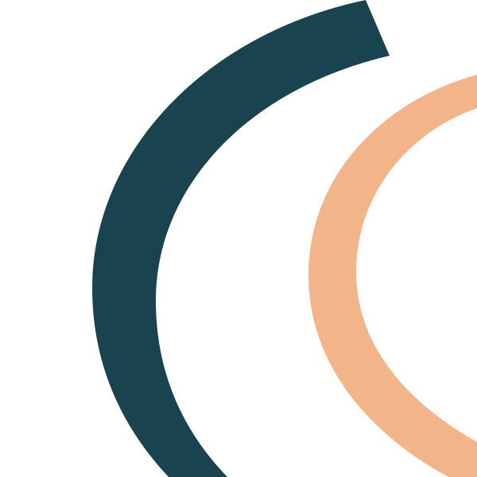
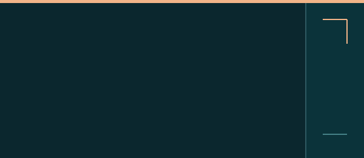
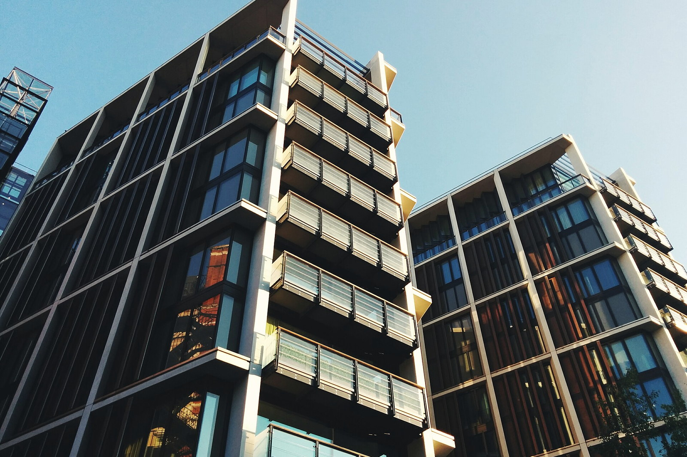
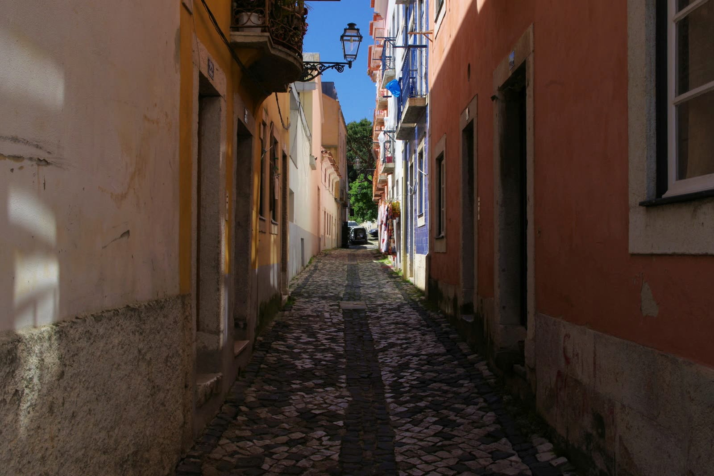
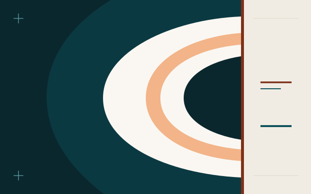

When a cross-cultural missionary arrives, the local leader still leads
Global Fellowship is an evangelical church-planting fellowship empowering local leaders to plant self-governing churches among unreached people while cross-cultural teammates serve alongside and under them.

 01 · FOUNDATIONS, THREE PILLARS & SEVEN VALUES
01 · FOUNDATIONS, THREE PILLARS & SEVEN VALUES
Permanent foundations, seven lived values
“We make disciples and plant new churches by empowering local leaders and sending cross-cultural missionaries to pioneer church-planting work among unreached people.”
Public infinitive form (Home / Our Mission): “To make disciples and plant new churches by empowering local leaders and sending cross-cultural missionaries to pioneer church-planting work among unreached people.”
“It is our vision to plant a Gospel witness within 30 minutes of everyone.”
Proclaiming Christ’s death and resurrection, making disciples, baptizing believers, and gathering healthy, multiplying local churches.
Empowering believers who already belong to the language, culture, and community to shepherd and multiply the church.
Communities with little or no access to the Gospel and no self-sustaining local church movement able to reach the wider group.
02 · MARK, LIVING APERTURE SYSTEM & PARTNER
ARCHITECTURE
One preserved mark, built to frame local voices
Global Fellowship’s 140:101 Cross-in-Oval silhouette stays exact, renewed in Harbor Teal + Kiln Clay on daylight paper and Warm Paper + Candle Apricot on Harbor Night, paired with vector-outlined Plus Jakarta Sans lockups and mark-derived Living Aperture margin geometry.
Master, Hub, Sub-Program & Copier Lockups

Clear space: 0.5H on all sides. Minimum widths: Lockup 120px web / 32mm print; standalone mark 24px / 8mm (integer-snapped 16px adaptive SVG favicon switching automatically for light/dark browser tabs plus 16px Harbor Night tile below 24px).
Four-Level Partner Architecture
- Level 1 · Master & Sub-Programs: Global Fellowship master lockup plus parent-anchored The Bridge Project lockup.
-
Level 2 · Regional Hubs: Master lockup + Kiln
Clay (
#7E3119) vertical divider + regional hub descriptor (English or local script). - Level 3 · Local Ministries (Endorsed): Local congregation leads visibly above in its own language and script; Global Fellowship signs quietly beneath.
- Level 4 · Zero-Attribution: Self-contained local-only sheet and editable Word starters (English and Arabic RTL) with neutral Noto typography and zero GF name, mark, EIN, or CSS import.



Vary masthead and page rhythm intentionally rather than forcing every document under one dark banner: 1. Monumental Local Voice (Harbor Night covers, slides, and documentary street photography), 2. Quiet Letter & Hospitality (Warm Paper or Warm Linen with Kiln Clay rules for letters and welcome guides), and 3. Open Books Field Note (daylight typography, tabular comparisons, and 10pt+ scope notes for elder vetting and finance).
03 · LIVING NEARNESS PALETTE & MULTILINGUAL TYPE
Harbor teal, kiln clay, warm paper
Anchored in 2 Corinthians 4:7 earthenware warmth, this proposed palette achieves 40/40 WCAG 2.2 AA/AAA and deuteranopia passes. It is designed to avoid specified corporate and regional flag combinations (actual local associations assessed by regional reviewers before public adoption), paired with a complete Ink-Neutral Fallback wherever preferred.
#16191C · Primary Ink
#F1ECE3 · Locked & Rails
#E9F2F3 · Calm Notice
#8CE0E5 / #6EAAB2
#821818 / #1B5E3A
Optical editorial serif, crisp tabular sans, global scripts
Optical Display, Witness & Script Engine. Leads covers, essays, prayer cards, Scripture, Locked Foundations, and local elders’ words with tactile book dignity. Harmonized SIL OFL 1.1 Noto siblings (including Noto Sans Arabic for crisp legibility) support Arabic RTL, Bengali, Thai, Devanagari, Cyrillic, and Simplified Chinese.
Wordmark, Open Books Data, UI & Forms.
Crisp geometric sans-serif reserved for tabular financial
totals, navigation, structured forms, datelines, and accessible
email buttons (tabular-nums for financial columns;
Microsoft Office offline fallback: Calibri/Georgia).
OFL-1.1.txt ship locally in
brand-kit/tokens/fonts/, audited across every
exported PDF with zero proprietary fonts.
04 · DOCUMENTARY STREET PHOTOGRAPHY & CURATION STANDARD
Ordinary streets, never generic illustrations
Public covers, decks, social posts, and editorial spreads pair
restrained typography with vetted, sRGB-normalized, EXIF-stripped
documentary street photography stored in
brand-kit/photography/ (zero ShareAlike encumbrance;
pending regional accept/replace review). Every frame honors
neighbors without identifying unconsented people.

Three-Path Sourcing Standard
-
Path A · Public Contextual Street Photos:
Tier 1 public channels use vetted non-identifying street
plates (
GF-PHO-01..06, CC0 1.0 & CC BY 2.0 only) with visible-only alt text, license URL, and “not a Global Fellowship congregation.” -
Path B · Commissioned GF Field Photos: Any
photo of real workers, elders, or partner congregations
requires signed, revocable
GF-TPL-15consent in the private archive, natural daylight WB, eye-level 1–2m framing, and EXIF/GPS stripped. - Path C · Photo-Free Print & Tier 2/3: Restricted prayer cards, encrypted mobile notes, office copiers, and Level 4 local sheets stay 100% photo-free with equal editorial dignity.



photography/PHOTO-LICENSES.md).
05 · THREE REGISTERS, LOCAL EDIT & PHOTO-FREE PARITY
Show clarity without self-congratulation
1. Witness · Stories & Prayer
Source Serif 4 leads. First-person local voice at the top when consented; joyful when celebrating baptism, tender in grief, direct about Jesus Christ.
2. Open Books · Finance
Plus Jakarta Sans tabular numerals. Print reporting scope right beside every figure at reading size (10pt+ in print). Never bury caveats in fine print.
3. Note · Mobile & Video
Under 60 words, present tense, phone-native for encrypted prayer groups, 9:16 vertical captions, and scannable next steps.
“Our church gathered neighboring households to read Mark in our own language.”
Draft set aside:
“Our team launched a new outreach across the
district.”
Even plausible outsider framing yields to local elders’
wording.
“Not this spring. Our congregation is grieving and needs space to heal.”
Decision: Proposed April team visit postponed without penalty. Health Above Results governs travel calendars.
“Two apartment fellowships welcomed shift-work neighbors to read Luke together.”
Draft set aside:
“We launched a new urban church-planting
hub.”
Local congregations stay the active subject in cities too.

Architectural 140:101 print fallback when photography is unavailable or unsafe.
Non-figurative print fallback for restricted or pre-consent booklets; never replaces public street photography.
Consistent pronoun & Scripture discipline:
Keep original Global Fellowship prose in lowercase divine
pronouns (he/his/him, verified automatically by
GF.DivinePronouns), while preserving verbatim
protected Statement of Faith wording byte-for-byte.
Prefer the cross-free architectural header and optical serif Scripture on Tier 2/3 cards, border-crossing handouts, and mobile notes. Never use silhouettes, blurred faces, black bars, or regional colors.
06 · CHANNEL KIT (27 TEMPLATES, 6 PHOTOS & 6 OFFICE STARTERS)
& GOVERNANCE
Every channel, one ready-to-use kit
| Channel & Audience | Ready-to-Use Deliverable | Governance & Safety Standard |
|---|---|---|
| Street Photography |
Curated Public Vault (GF-PHO-01..06) & Provenance/Rejection Log (PHOTO-LICENSES.md)
|
Byte-verified zero-EXIF JPEGs, zero identifiable faces/flags, CC attribution, and regional accept/replace gate. |
| 4x6 Prayer Cards |
Restricted Master (GF-TPL-01) & Public Variant (GF-TPL-02) in exact 4x6 trim and 0.125in bleed press PDFs
|
Shared warm architectural header & serif Scripture; mark on back of Tier 3; neutral PDF title; fresh consent required. |
| Local & Arabic Briefs |
Welcome Brief (GF-TPL-03), Level 4 Sheet (GF-TPL-16), 1-Page Pure-Arabic Brief (GF-TPL-19) + Translator Sheet (19B) & RTL Word Starter
|
Local leadership leads visually; Level 4 & Arabic handouts ship standalone with pure-Arabic metadata and zero outside tells. |
| Field Workers & Staff |
Prayer-Letter Kit (GF-TPL-04) + Dual Word, Candidate Kit (GF-TPL-24A), Internal Day-1 Pack (GF-TPL-24B) & 8-Slide Deck (.pptx)
|
Strict separation of Tier 1 vs. Tier 2/3 signatures and starters; joyful & rest options; Georgia/Calibri offline fallbacks. |
| Churches & Bridge |
Partnership Kit (GF-TPL-06), Elders’ Vetting (GF-TPL-22), Host Agreement (GF-TPL-23), Pure-Black Bulletin (GF-TPL-17), Bridge Kids (20) & Welcome Guide (25)
|
Byte-exact 8-article Statement of Faith; unconditional host veto (“not this year”); pure #000000 lobby/table masters. |
| Annual Report & Donors |
2025 Spread (GF-TPL-05), Zero-Image Fluid Emails (GF-TPL-08/09), Donor Lifecycle & Receipt Kit (GF-TPL-21) + Editable Manual Fill-In Word Starter
|
Comparable disbursement scale, IRS substantiation & PCI-safe payment care, re-designation tree, and flush-left wordmarks. |
| Mobile, Social & Video |
Social/OG/Photo-Story + 3 Q&A Carousel PNGs (GF-TPL-11), EN/TH/AR Phone Notes & Audio Spec (GF-TPL-14), 25.00s Tier 1 Video (GF-VID-01)
|
Tier 1 public video (ambient audio + 10-cue captions + street photo); Tier 3 encrypted chats stay strictly photo-free. |
| Consent, Care & Stationery |
Standalone 2-Page Consent Form (GF-TPL-15), Confidential Care Journal (GF-TPL-18) & Stationery (GF-TPL-12)
|
Confidential pastoral journal strictly separated from public letterhead; store signed consent & care files outside Git. |
Original 1.65px rounded-cap SVGs authored specifically for Global Fellowship (zero third-party icon licenses), paired with visible text labels.
Before Public Launch: Leadership Release Checklist (V15)
This Living Nearness V15 brand system remains awaiting explicit human approval (website implementation is paused until brand sign-off). Before external distribution, Global Fellowship leaders complete three gates tracked in knowledge/references/open-verification-register.md: 1. Finance & Operations confirm entity scope, reply timelines, and planned web routes; 2. Regional & Pastoral Leads review palette and street photography acceptance, native translations, Scripture permissions, and fresh consent; 3. Production runs physical 300dpi copier and CMYK press proofs.